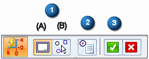
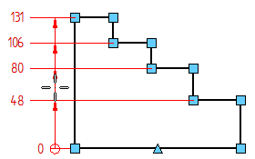
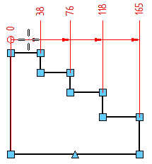
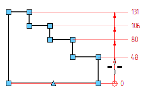
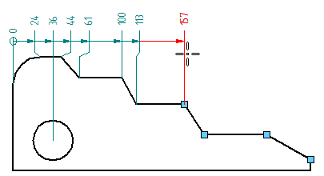
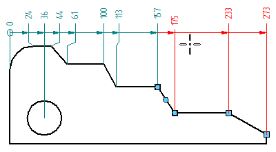
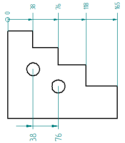
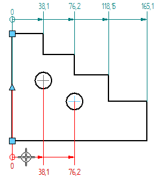
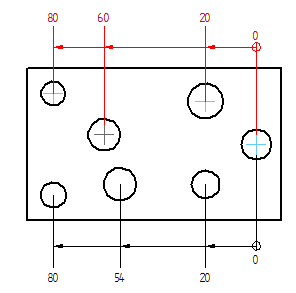
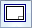

Place coordinate dimensions automatically
You can place coordinate dimensions automatically on all geometry in a drawing view or on a selected set of geometry.
-
Choose Home tab→Dimension group→Automatic Coordinate Dimension
 .
. -
On the Automatic Coordinate Dimension command bar, do the following:

-
Choose a geometry selection method
-
To place coordinate dimensions on all of the geometry in a drawing view of the 3D model or a 2D model view created from geometry on the 2D Model sheet:
-
Click Select Drawing View (1A).
-
Click a drawing view.
-
-
To place coordinate dimensions on geometry that you select manually:
-
Click Select Geometry (1B).
-
Drag a box around the geometry that you want to select, or click individual elements.
You can use Ctrl+click to remove individual items from the selection set.
-
Keypoints now are displayed on the selected geometry. In the next step, you can add or remove keypoints from the selected geometry.
-
-
Choose the geometry keypoints for placing dimensions
-
Click Keypoint Options (2).
-
In the Keypoint Options dialog box, select the types of points you want to dimension, and clear the types of points you do not.
The keypoints are updated on the selected geometry.
-
-
On the Automatic Coordinate Dimension command bar, click Accept (3) to continue.
Now the Dimension command bar is displayed.
-
-
Click a keypoint on an element that you want to be the common dimension origin.
-
Move the cursor around the geometry to define the direction of the dimension lines.
Example:


-
Click to place all of the dimensions at once.
-
(Optional) Place more dimensions.
-
On the command bar, choose a geometry selection method, select the geometry, and click Accept.
-
Place the dimensions using one of the following methods:
-
(To add them to an existing alignment set) Select an existing measure dimension, and then click to place the new dimensions on the highlighted keypoints.
Example:
The original dimensions adjust their spacing and text size, and jogs are added and removed to accommodate the newly added dimensions.

-
(To create a new alignment set using the same origin) Select an existing coordinate dimension. Press Alt while you move the cursor to position the dimensions in the desired alignment. Click to place them.
Example:
-
(To place a second origin dimension on the drawing view) Click a new common origin element or keypoint, and then move the cursor until the dimensions are oriented the way you want them. Click to place them.
Example:

-
-
-
Before you click to place the dimensions, you can change the dimension text scale and round-off using options on the command bar.
-
You can use the Back button on the Dimension command bar to return to the geometry selection step. This restarts the command if no dimensions were placed, or it continues the automatic placement workflow after the initial dimension placement.
-
The Select Drawing View

option is useful when you want to place coordinate dimensions across multiple views, such as a source view followed by a detail view. You can do this without exiting the command. For more information, see Place coordinate dimensions between drawing views. -
You can set options on the Lines and Coordinate tab in the dimension style to allow negative values and to allow the origin value to change to a nonzero value.
How do I
Place a coordinate dimensionPlace a coordinate dimension using a coordinate system
Place an angular coordinate dimension
Place coordinate dimensions between drawing views
Change the origin dimension in a coordinate dimension group
Change the coordinate origin value
Learn more
Ordinate dimensionsCoordinate dimension alignment sets
Adding and removing jogs on coordinate dimensions
Look up more details
Dimension command barCoordinate dimension handles
Automatic Coordinate Dimension command
Automatic Coordinate Dimension command bar
Keypoint Options dialog box
Coordinate Dimension command
Angular Coordinate Dimension command
Change Coordinate Origin command
Lines and Coordinate tab (Dimension Style and Dimension Properties)